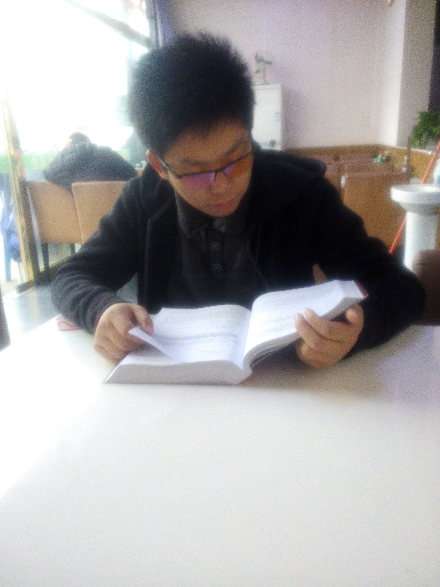

我的名片
网名：tk-canday
职业：Web前端工程师 (北京)
电话：18366109621
Email：canday.txw@foxmail.com
github: https://github.com/tk-canday
-
我为什么选择前端这个行业?
-

选择这个工作，既不是一种信仰，也不是一种无奈。也就没有技术改变生活、代码改变世界的伟大梦想。说实话，刚入行的时候根本不知道，我们真的能做什么，更不要谈改变世界的梦想。与其说它是一种梦想不如说是一种顺其自然的宿命，或是一种舍我其谁的魄力。更恰当地说应该是以自己的兴趣或能力范围内做点什么事情以养活自己，想一想前端的付出与回报还是成正比的，然后就进入这个行业。呆了几年，感觉还不错，准备继续做下去，目前就是这样的现状。准备以后试图时刻改变自己，以顺应这个时代或社会的发展需要，免得被淘汰掉。所以，对这个行业，目前还是比较看好。 人生是有终点，前端只是在目前这个人生阶段选择的一种谋生手段或实现自我价值的一种方法罢，然后前端又是IT领域众多岗位中的一个，它上可以调戏设计妹纸，下可以与后端哥如鱼得水。是众多IT工种中，最复杂，最难以平衡的岗位。其实不做前端，可以做后端，做测试，运维等等的岗位。但由于其特殊性，选择了这个岗位。其实是有一种舍我其谁的勇气，就是这个岗位如果我不干换其它人可能干不好的魄力。 总体来说：是大环境把这个岗位推到了我们的眼前，比如同学恰好是研究前端技术的，然后顺便带了带，然后自己学了学，感觉还不错就上路了。 另外，人的想法会随着年龄的增长或阅历的增加而改变的，不管怎么样，做好当下的选择是最重要的。无论对前端抱有希望还是带着无限的伤痕，这是当下自己的选择，所以要尽力而为。换个角度，如果不是抱有这样的信仰和应对生活的勇气，就算换个行业，也会败下阵来。所谓选择是：清楚此与彼的好与坏，然后在选择此。无论怎么样，哪个岗位都有很坑的一面，做好应对的心理准备或无限的激情。过好生活，认真的走完人生的现阶段。
-
谁更心软，谁就先长大